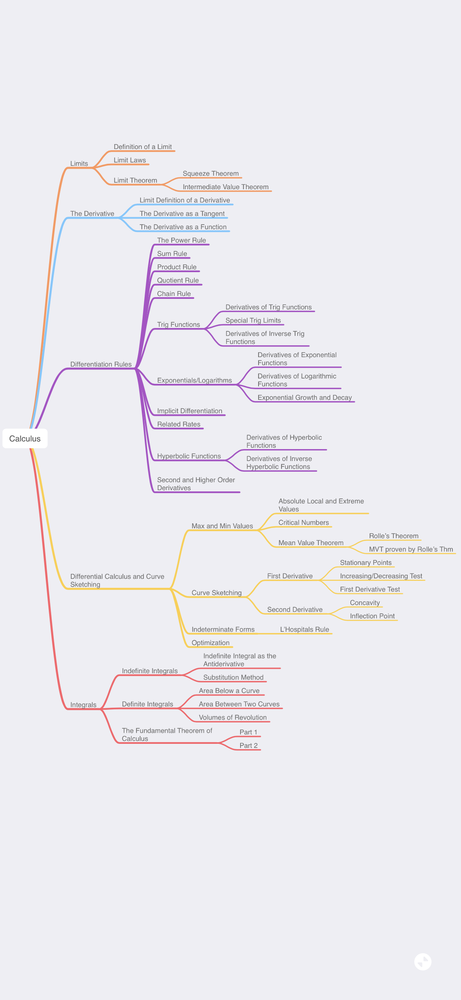
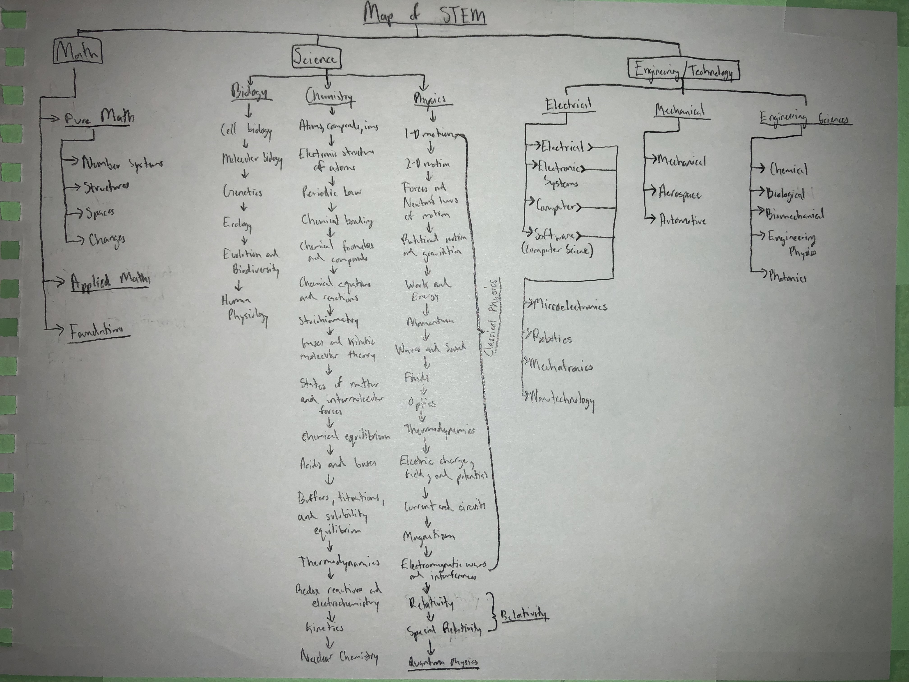
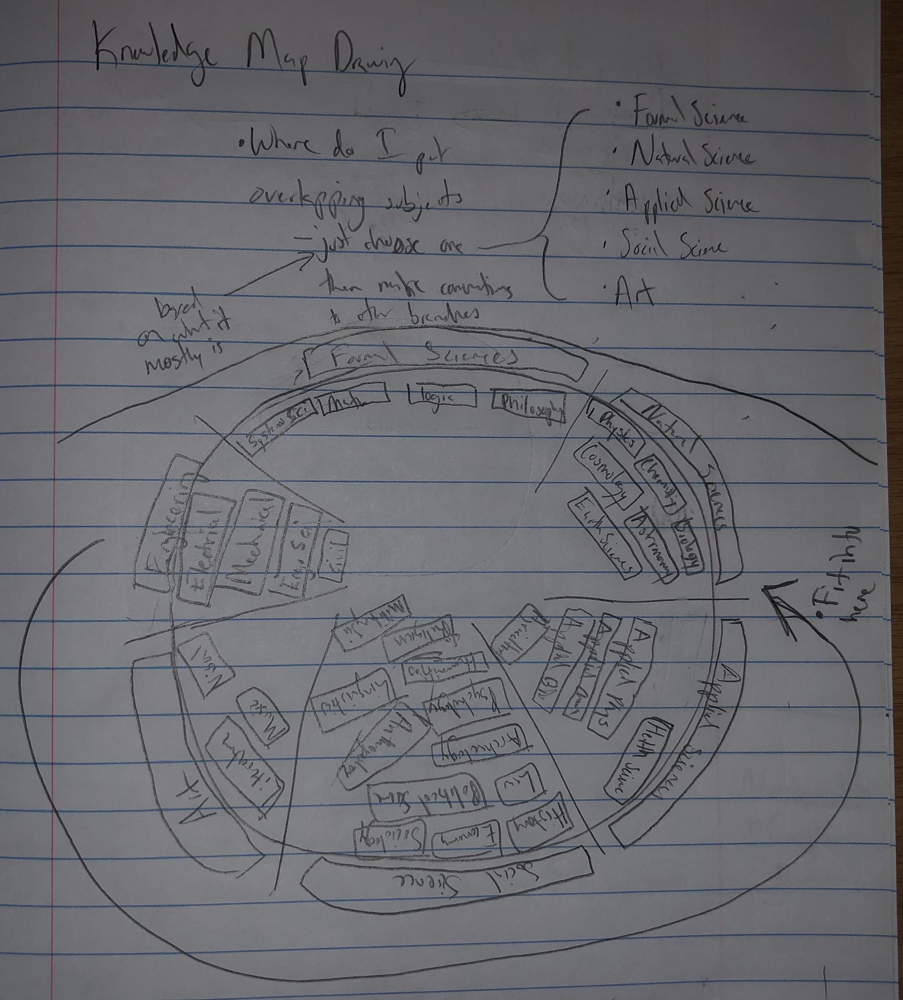
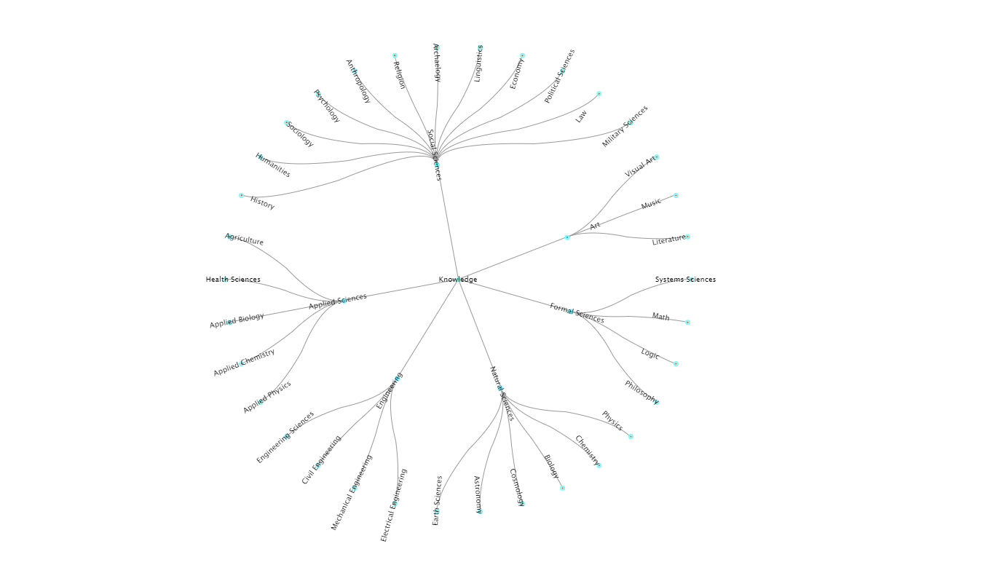
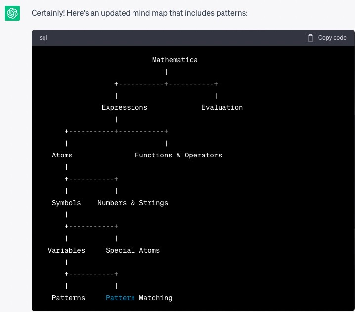
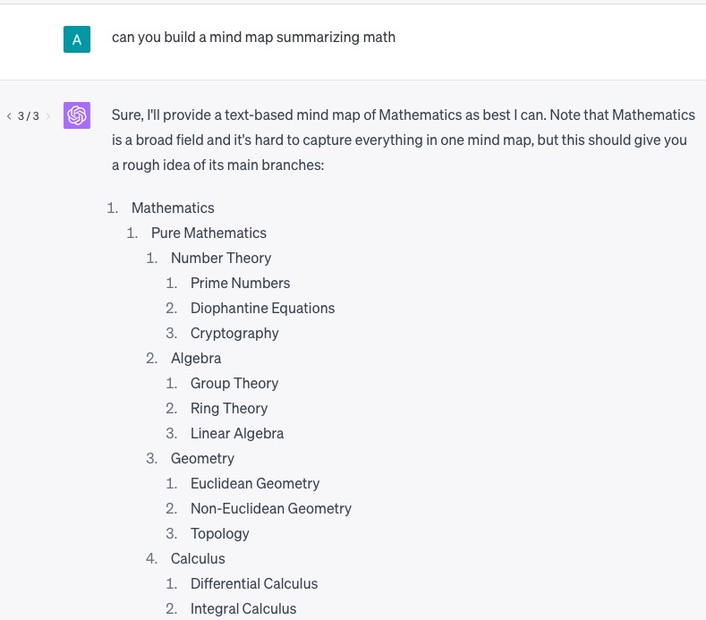
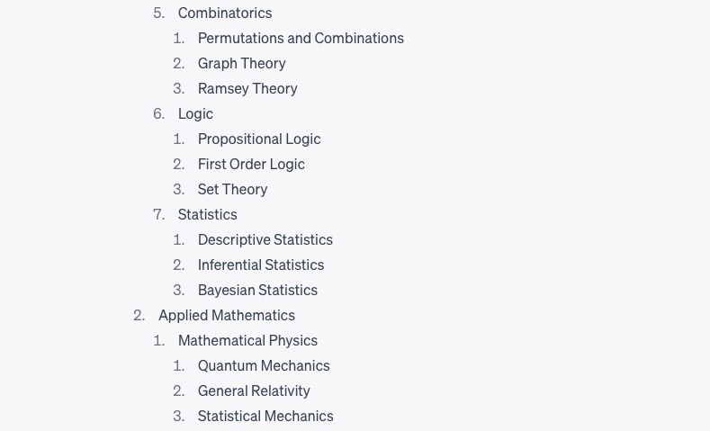
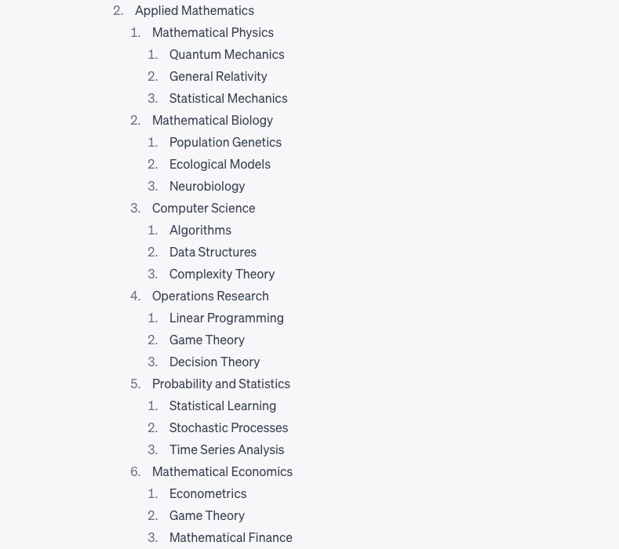

Evolutionary Ontology of the Domain of Knowledge
This node is for DifferentialCalculus
The general idea of Knowledge Map can be summarized as an Evolutionary Ontology for the Domain of Knowledge. So one can think of it like: Evolutionary[Ontology[DomainOfKnowledge]].
Domain of Knowledge can be thought of as the set of all fields of study. It’s purposely a bit loosely defined to allow for flexibility, which will be important for the dynamics discussed later.
Ontologies (in the information science sense) can be thought of as a relational/categorical mapping of some domain of discourse. In this case, the domain is all the fields of study. And the mapping is a hierarchical tree structure. I am still open to changing the mapping, but I think as of now, it's the best fit for this project. And there is also a way I can have the ontological mapping be parameterized, to allow for different mappings: Ontology[domain, Options->Mappings] with Mappings = {“Hierarchical Tree”, “Connectome”, etc.}. The resolution at which one is looking at the ontologies dictates how specific or general one is (i.e. looking at the field of pure math as a whole, or looking at just commutative algebra) when viewing the mapping.
The Evolutionary aspects, is really where this project will reap the most benefits. The project should ideally be open access (there are limits I can discuss later), as the community will be responsible for creating their own ontologies for their niche fields, or for broader fields. Using the example above someone could flesh out the mapping for commutative algebra and another for pure algebra, using the others mapping for commutative algebra as a node. The evolution itself is administered by a voting mechanism that allows for the best to rise to the top at different levels of granularity. So multiple different mappings can arise for commutative algebra, and multiple mappings for pure math. And the highest mapping for pure math may use the highest voted commutative algebra. This allows for a certain synergy between generalists and specialists.
This project alone was created to allow for creating a knowledge structure for all of human knowledge, however it also has multiple benefits such as allowing users to understand where a subject like Quantum Computing is located within the tree, so they can see what are the prerequisites for learning it, as I find that generally the problem with learning a subject is finding out where are your gaps in the foundations of that subject. Essentially addressing the issues of “the things one doesn’t know what one doesn’t know”. One can also see what are surrounding subjects to the one being viewed. This also allows for easily viewing how closely related two or more subjects are related.
Another aspect that popped out while I was creating this: Using Knowledge Graphs to interpret Knowledge Structures within ChatGPT. I created the Knowledge Map a while ago, around 2 years before ChatGPT. So, after ChatGPT was released I fed in the code of this to ChatGPT, to have it create its own Knowledge Maps. I realized that having LLMs build out ontologies could be one way to interpret the knowledge encoded within it. I don’t have much technical knowledge of ML, so maybe this isn’t a very useful idea, but it was fun to build at least.
I wanted to create a mindmap for all of STEM so I had a roadmap for all the things I wanted to create.
Then I started thinking I should do this for all of human knowledge.
I decided it would be much easier for me to work on this if I could make an app to store and make the map more aesthetic.
I then decided to change the structure to more tree like, rather than chord diagram like.

Thinking thru this led me down an interesting path into epistomology and eventually what my friend Alec coined: Consciousness First framework
Realizing that there are multiple frameworks for how people would think the map should be I decided it would be best to make this into a website where many people could contribute to how they believed the map should be, and hopefully we could reach global consensus on a framework for representing knowledge.
I find parallels from how Stephen Wolfram wanted to work on computational knowledge, I wanted to work on categorical knowledge.
It would basically make the search thru knowledge much easier, so that one can find connections between topics.
Also I have been very interested in BCIs, and was wondering about how we could search and store info into our brains. I also was curious to what epistomology an AGI would create.
So it was really a combination of ideas and thoughts that culminated in this project.
If something like Wikipedia exists (a repository of human knowledge), then it makes sense Knowledge Map should exist (a repository of the categorizations of human knowledge)
These are kinda just ramblings, I'll sharpen them up later
- Similar concept to how MIT has OCW
Wikiverse is a rendering of wikipedia as a galactic 3D model.
Using ChatGPT to create mindmaps: essentially creating structure out of all the information it has encoded.
Mindmap for Mathematica built with ChatGPT 3.5:
Textual Mindmap for Mathematica built with ChatGPT 4:
Obviously math is a much broader and harder subject to cover, but it did a relatively decent job.
  